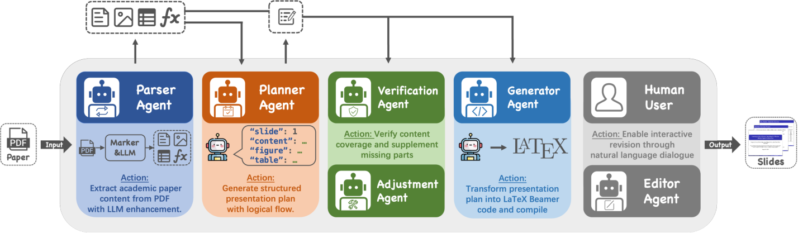
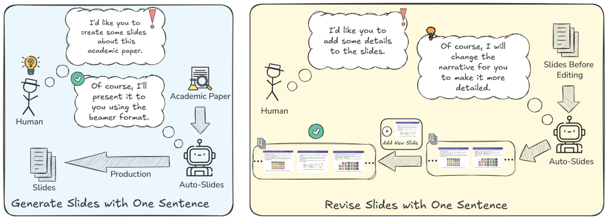
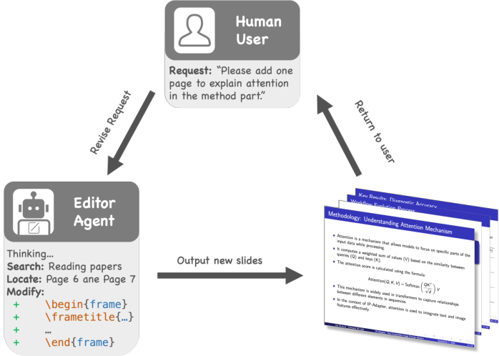

PAPER READING
2026
Auto-Slides: An Interactive
Multi-Agent System for Creating
and Customizing Research Presentations
基于 LLM 的多智能体框架，将学术论文自动转化为教学优化的演示文稿，支持自然语言交互式修订
Yuheng Yang, Wenjia Jiang, Yang Wang, Yi Song, Yiwei Wang, Chi Zhang*
AGI Lab, Westlake University
ICME 2026
Abstract
摘要
The rapid progress of large language models (LLMs) has opened new opportunities for education. While learners can interact with academic papers through LLM-powered dialogue, such interactions are typically fragmented and text-only, lacking the structured, multimodal presentation that supports effective learning.
本文提出 AUTO-SLIDES，一个 LLM 驱动的多智能体框架，将学术论文自动转化为 教学优化的演示文稿。系统包含三阶段流水线：内容理解与结构化、质量保证 和 生成与交互式优化，支持自然语言迭代修订。
Introduction
研究背景与挑战
LLM 对话式学习
现有方式
- 问答碎片化，缺乏系统组织
- 纯文本输出，缺少视觉辅助
- 学习者难以形成整体认知
- 复杂关系与结构难以传达
本文方案
Auto-Slides
- 结构化、多模态的演示文稿
- 认知科学指导的内容重组
- PMRC 教学叙事框架
- 人在回路的交互式修订
Challenges
论文到幻灯片转化的三大挑战
01
叙事风格差异
学术论文以 IMRaD 结构记录新颖性与严谨性，假设读者已有背景知识；教学幻灯片需要从问题出发、逻辑递进的 PMRC 叙事
02
多模态内容保真
论文包含复杂表格、公式与图表，现有 LLM 在多模态内容提取上存在不足，导致关键信息丢失或结构错误
03
事实准确性
LLM 的上下文长度限制与幻觉倾向可能导致遗漏重要发现或引入与原文不符的事实错误
Contributions
本文贡献
- 提出 AUTO-SLIDES，LLM 驱动的多智能体框架，实现论文到教学幻灯片的端到端自动转化
- 设计 Parser Agent 实现高保真多模态内容解析，Planner Agent 基于 PMRC 框架重组教学内容
- 引入 Verification + Adjustment 双重质量保证机制，确保内容保真与事实准确
- 开发 Editor Agent 支持 ReAct 风格的自然语言交互式修订
- 三项用户研究 + LLM-as-Judge 消融实验验证系统有效性
Related Work
相关工作
LLM 在教育中的应用
LLM 驱动的对话式学习（如 ReAct）支持推理与行动的协同，但输出以纯文本为主，缺乏结构化视觉呈现
不足：碎片化交互、缺少多模态支持
自动演示文稿生成
传统方法如 LaTeX Beamer 依赖手动编码；Marker 等工具仅做 PDF 格式转换，缺乏教学优化与交互能力
不足：无内容重组、无质量保证、无交互修订
现有方法在 多模态内容保真、教学叙事优化 和 交互式精调 方面存在明显空白。
Method — Overview
Auto-Slides 总体框架
1
Content Understanding
Parser + Planner
IMRaD → PMRC
→
2
Quality Assurance
Verification +
Adjustment
→
3
Generation
Generator + Editor
LaTeX Slides
三阶段流水线：Parser Agent 解析论文多模态内容，Planner Agent 基于 PMRC 重组叙事，Verification + Adjustment 保证准确，Generator 输出 LaTeX，Editor 支持交互修订。
Method — Pipeline
系统流水线

Fig. 2 — Auto-Slides Pipeline: (1) Parser & Planner Agents 设计 JSON 结构; (2) Verification & Adjustment Agents 确保保真; (3) Generator & Editor Agents 产出幻灯片并支持交互修订
Method — Stage 1a
Parser Agent: 高保真内容解析
两阶段解析策略
- 第一阶段 (Base Parsing)：使用 Marker 提取论文基础文本结构
- 第二阶段 (Information Extraction)：LLM 二次解析复杂表格、公式与图表
- 提取内容存入结构化数据库，支持后续智能体精确检索
表格保真：二次解析保留表格结构、公式精度与数据关系，避免 Markdown 转换导致的信息丢失
结构化输出：解析结果以 JSON 格式存储，每条记录包含位置、类型与内容，支持精确 RAG 检索
Method — Stage 1b
Planner Agent: 认知驱动教学规划
论文原始结构
IMRaD
- Introduction — 记录研究背景
- Methods — 描述技术细节
- Results — 展示实验数据
- Discussion — 分析意义
教学优化结构
PMRC
- Problem — 明确研究问题与动机
- Motivation — 阐述方法设计理由
- Results — 聚焦核心发现
- Conclusion — 总结与展望
PMRC 叙事受 认知负荷理论 与 多媒体学习理论 指导：渐进式概念递进、文本-视觉空间邻近，降低外在认知负荷。
Method — Stage 2
质量保证：验证与调整
STEP 1
Verification Agent
将幻灯片计划与论文解析内容逐项对比，评估方法论、结果与结论的覆盖充分性
→
STEP 2
覆盖评估
使用宽松语义准则：只要核心概念或发现被传达即计入覆盖，而非要求逐句匹配
→
STEP 3
Adjustment Agent
仅在覆盖不足时触发，定位原文材料、整合到现有幻灯片或新建补充页
双重机制：Verification 确保关键发现不遗漏，Adjustment 仅修复高优先级缺失，避免过度修改。实验显示基础管线本身已具有较高的内容准确性 (85.7% Tie)。
Method — Stage 3
生成与交互式修订
01
Generator Agent
将 JSON 计划转化为 LaTeX Beamer 代码，编译为 PDF 幻灯片。保留表格、公式与图表的多模态完整性
02
Editor Agent
采用 ReAct 风格过程：解读用户自然语言指令 → 定位相关片段 → 检索内容 → 修改代码 → 编译更新，支持迭代式精调
交互示例
用户: "I'd like you to change the narrative for you to make it more detailed." → Editor Agent 解读意图 → 定位需修改的幻灯片 → 检索原文补充内容 → 生成更新
System Demo
Auto-Slides 能力展示

Fig. 1 — 左: 从论文自动生成完整学术演示文稿; 右: 通过自然语言指令迭代修订幻灯片
Experiments — Settings
实验设置
基座模型
- Parser Agent: Marker + GPT-4o
- Planner Agent: GPT-4o
- Verification / Adjustment: GPT-4o
- Generator: GPT-4o → LaTeX Beamer
- Editor: ReAct 风格 LLM 调用
评估方法
- User Study 1: 20 名参与者评估可用性 (SUS)
- User Study 2: 对比 LLM 对话学习 vs Auto-Slides
- User Study 3: 8 名专家评估叙事优化
- LLM-as-Judge: GPT-4o + Claude-3.7 评估表格保真与内容准确
Experiments — User Study 1
用户研究 1: 可用性评估
- 20 名参与者，跨 5 篇论文
- SUS ≥ 80 即为"优秀"等级
- 参与者评价系统 易于使用、输出质量高
定性反馈
- 幻灯片 结构清晰，逻辑流畅
- 多模态元素（表格、公式）保真度高
- 自然语言修订功能被广泛认可
- 编辑精确度仍有提升空间
Experiments — User Study 2 & 3
对比学习效果与叙事优化
Study 2: Auto-Slides vs LLM Chat
Auto-Slides 组在 Content Accuracy (5.59 vs 4.96, p=0.026, d=0.99) 和 Narrative Flow (4.96 vs 4.30, p=0.019, d=1.07) 上显著优于 LLM 对话组
Information Density 无显著差异 (4.38 vs 4.50)，说明内容重组提升理解而非削减信息量
Study 3: 专家评估叙事优化
8 名研究者评估自有论文生成的幻灯片。PMRC 叙事优化在 Content Accuracy 和 Narrative Structure & Flow 上优于线性结构基线
专家将提升归因于更流畅的概念导航和更高的研究发现呈现保真度
叙事优化 通过重组内容而非改变信息量来增强理解，降低认知负荷，使受众更容易跟随复杂论证与验证证据。
Experiments — Ablation
LLM-as-Judge 消融实验
| Metric |
Judge |
Full Win |
Tie |
Agreement |
| Table Fidelity |
GPT-4o |
67.9% (19) |
14.3% (4) |
78.6% |
| Claude |
67.9% (19) |
14.3% (4) |
50.0% |
| Content Accuracy |
GPT-4o |
7.1% (2) |
85.7% (24) |
71.4% |
表格保真方面，两个 Judge 模型均以 67.9% 的胜率支持完整系统，凸显 Parser Agent 在保持复杂结构中的关键作用。内容准确方面，85.7% 为平局，表明基础管线本身已高度准确，Verification Agent 主要作为 安全网 存在。
Experiments — Ablation Visualization
消融可视化

消融分析：Parser Agent 二次解析显著提升表格保真度，Verification-Adjustment 提供额外鲁棒性
Conclusion
总结与展望
核心贡献
- 提出 AUTO-SLIDES 多智能体框架
- 六智能体三阶段流水线：Parser, Planner, Verification, Adjustment, Generator, Editor
- PMRC 认知驱动叙事优化
- 三项用户研究 + 消融实验验证有效性
局限与未来
- 依赖 LLM 能力，生成质量受模型限制
- 当前仅支持 LaTeX Beamer 格式输出
- 未来方向：支持更多输出格式 (PPT, HTML)
- 扩展至更长文档与跨论文综述幻灯片
Thank You
Auto-Slides: An Interactive Multi-Agent System for
Creating and Customizing Research Presentations
ICME 2026
Yuheng Yang et al.
AGI Lab, Westlake University
auto-slides.github.io